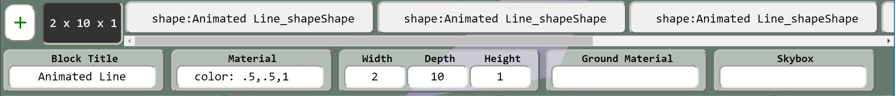

Disclaimer:
This site is a tool for clients to collaborate with us (sceneblocks.com) to stage web gl content. Should you be using this for your own purposes outside the scope of our activities, we are not in anyway responsible for problems you encounter. Any data contained
in our databases is exclusively ours. While you are free to export and use videos and data from this site at this time, any and all copyrights are retained by sceneblocks.com.
3D Block Diagrams Blocks Meshes
Materials and Textures Frames
Intro
This application is written using Firebase for the hosting and realtime data features.
Babylon.js is used for the WebGL functionality, and their documentation is the technical reference to the animation functionality. This application targets rapidly developing scenes for consumption by javascript
applications. Where features and functionality are quicker or easier to perform in code, they're left to be done there. That being said, for simple things like flowcharting and small animated videos this tool should do fine.
3D Block Diagrams
There are 3 add helpers for quickly building diagrams.
Text and Shape
This block creation helper combines 1 or 2 lines of text to make a shape combined with text. This is intended to replace a 2D square or circle containing text. It's not a good idea to have too many characters in one animation - as the poly count can get high fast.
For the materials, you can either use a material you have created, or you can use "color: 1,1,1" notation to specify a color as the material.
For the shape, pick one of the presets, size it and the text and shape will be generated and placed into a box. The shape will be positioned on the negative Z axis, centered on Y and X. The text will be placed on the positive Z axis.
Connector Line
This block creation helper combines 3 shapes into a block to form a connector line. A cylinder shape is used for the
line - if you don't want it round, specify the number of div (min 3), i.e. 4 makes a box instead of a cylinder.
Animated Line
This block creation helper combines shapes into a container block and adds frames. To make the dashes move faster, decrease the
Run Time, or increase the D (Depth) of the line. Use these in place of dashed lines or to show flow.
Blocks

Meshes
Materials and Textures
Frames